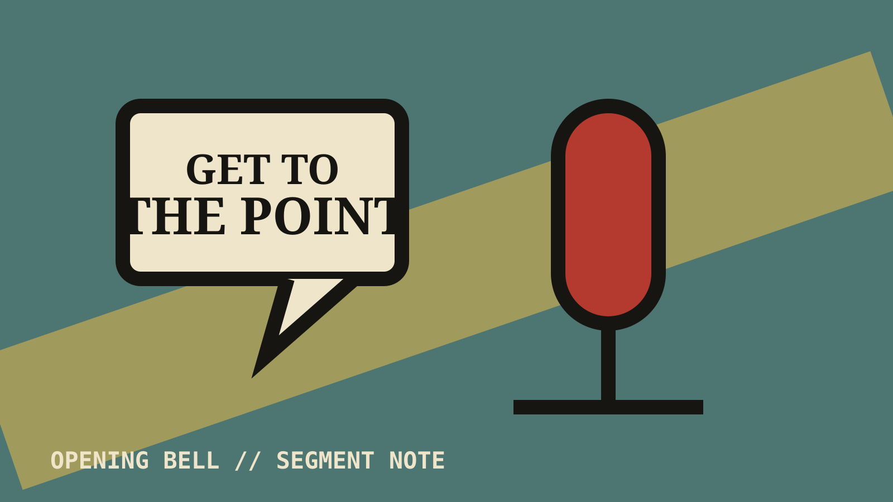

NOTE 01 OF 04 // Segment Note
The opening promo finally found the point

It wandered, doubled back, and nearly lost me — then one sharp line made the whole thing click.
Sometimes a promo does not need more intensity. It needs an editor.
For most of the opening segment, everybody sounded like they were waiting for somebody else to say the important thing.
The first speaker repeated the premise. The second repeated it louder. A third person arrived to explain why the first two were angry, which was useful only if you had muted the television five minutes earlier.
Then came one short line that framed the rivalry properly. Suddenly the rambling had a destination. I am not convinced the journey was worth it, but at least the show eventually remembered where it parked.